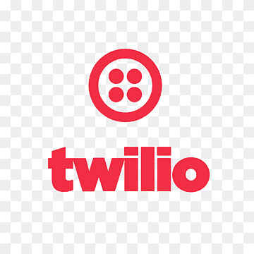
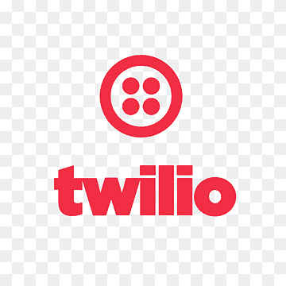

My Projects
SkyCast - Flight Delay Predictor


Developed a predictive Flask-based application, utilizing Open-Meteo API to predict flight delays by analyzing real-time weather metrics like temperature, precipitation, and wind speed. Engineered a RandomForestRegressor model using pandas for data manipulation and scikit-learn for model training to process extensive historical flight and weather data...
GitHubDrug Efficacy Analysis and Prediction Tool
Employed JDBC to connect to MySQL database and used SQL queries to analyze drug efficacy based on sex, age, and treatment duration to provide insights. Implemented ML algorithms using Apache Commons Math for model training and predictive analytics. Predicted drug efficacy based on patient info and treatment details, achieving a mean squared error of <0.1.
GitHubVital Smart: IoT based In-Home Health Monitoring System

 

Jun 2021 - Aug 2023
Vital Smart allows for the measurement of multiple vitals, stores the results, and displays them in real-time through a web portal and mobile application. The system also features a custom-built AI-based advice engine that analyzes the user’s vitals and provides a basic diagnosis on whether they should seek medical help. It also notifies the user and their relatives through SMS of any abnormal values.
Clevr - Peer Tutoring Learning Management System
May 2020 - Jun 2023
Clevr is an automated matchmaking software that employs algorithmic techniques via Google Apps Script to efficiently connect over 300 student-tutor pairs, fostering resident learning hubs. This faculty-endorsed system, now in its fifth operational year, bridges the personalization gap in instruction while ensuring seamless communication.
Baby Saver - Hot Car Alert Device
Sep 2018 - Aug 2020
Baby Saver prevents hot car child deaths by detecting a baby in a car seat and, if present, sends different types of automated alerts to parents and local authorities when the temperature measurements inside the car cross certain temperature thresholds. The device is predicated on a multi-level alert system: When the temperature in the car crosses one of 3 temperature thresholds, a certain action will be performed. The temperature thresholds are easily configurable in the software and can be adjusted based on geographic location. When the temperature crosses the first temperature threshold, an alert will be sent to parents’ phones. When the temperature crosses the second temperature threshold, a buzzer will sound off, creating local awareness to people around the car. When the temperature crosses the third temperature threshold, an alert will be sent to local authorities. Along with this, the GPS coordinates of where the baby is will also be sent to the local authorities to help trace the child quickly.
Patents
Baby Saver - Hot Car Alert Device
63104815 · Filed Oct 23, 2020
My Experience
Software Engineering Intern - AstraZeneca - Evinova
May 2024 – Aug 2024
During my internship at AstraZeneca's Evinova division, I employed advanced data analysis and visualization techniques to support passive monitoring initiatives. Utilizing a powerful suite of Python libraries, including Matplotlib, Scikit-learn, SciPy, NumPy, and pandas, I developed algorithms and systems to analyze large datasets effectively. My work involved:
- Implemented passive monitoring solutions using Python libraries (Matplotlib, Scikit-learn, SciPy, NumPy, pandas) to enhance data analytics and visualization, leading to more informed decision-making processes in healthcare monitoring.
- Developed and optimized predictive models to analyze complex datasets, increasing the accuracy and efficiency of health monitoring systems using Scikit-learn and SciPy.
- Led the integration of user interfaces for advanced AI applications, boosting operational efficiency by 20% through improved user interactions and data processing capabilities.
AI Research Assistant - Proxzar.AI
Jun 2022 – Aug 2022
Trained in Proxzar AI/NLP capabilities, laying groundwork for advanced AI applications. Engineered conversational chatbots from complex datasets using React, enhancing user interaction for 250+ clients. Led deployment of 5 UIs for chatbot and contextual search features, increasing user efficiency by 20%.
My Education

University of Maryland - College Park
Graduating in May 2026
GPA 3.7/4.0
- Major in Computer Science
- Minor in Data Science
Technical Skills
- Languages: Python, Java, C, C++, Javascript, HTML/CSS, R, SQL, Assembly
- Frameworks and Libraries: React.js, Node.js, Flask, pandas, scikit-learn, NumPy, SciPy, matplotlib
- Developer Tools and Databases: VS Code, Eclipse, RStudio, Git, JDBC, mySQL, Firebase Realtime Database
Activities/Programs
xFoundry @ UMD
Leading the development of an AI-enabled system for real-time detection and notification of active shooter events for 1,400+ K-12 schools and colleges, backed by a $250K-$2M investment.
UMD Honors Global Communities (HGLO)
Leveraging data visualization and statistical analysis in R to analyze over 1,500 survey responses on military and gun control policies, leading to the ongoing development of a professional memo for a U.S. senator.
Contact Me
Email: pjvallabhaneni@gmail.com